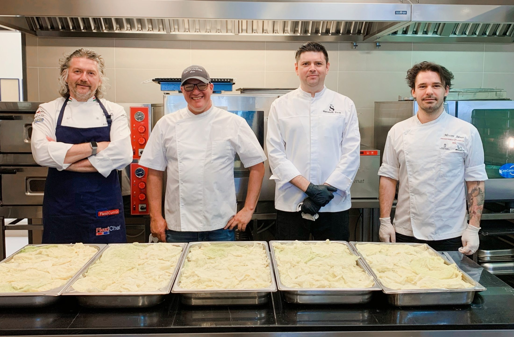
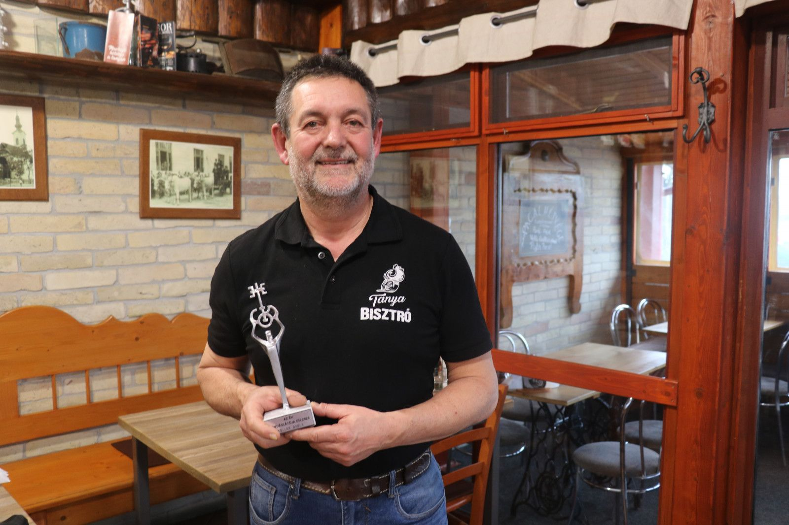
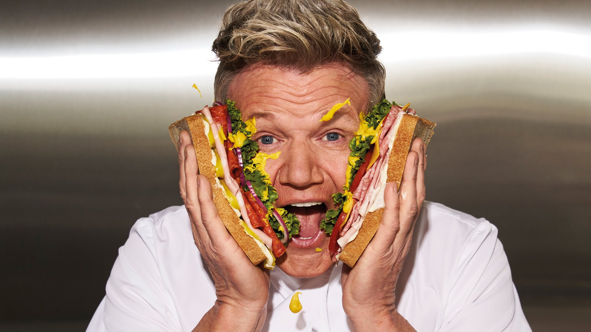

Cégünk célja, hogy minőségi recepteket és hasznos gasztro tippeket osszunk meg veletek. Szenvedéllyel főzünk, és szeretnénk, ha ti is átélnétek a konyhában a kreativitás örömét!
Alapítóink tapasztalt séfek és gasztrobloggerek, akik számára az étel nem csak táplálék, hanem élmény és művészet is egyben. Oldalunkon változatos ételek receptjeit találhatod meg, a hagyományos magyar fogásoktól a modern nemzetközi ízekig.
Reméljük, hogy receptjeinkkel inspirációt adunk neked a mindennapi főzéshez és különleges alkalmakhoz egyaránt!